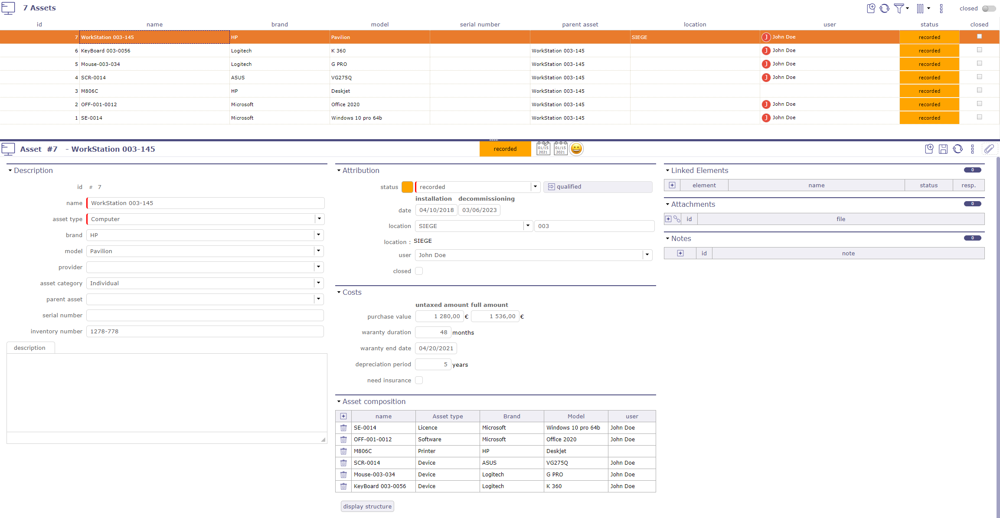
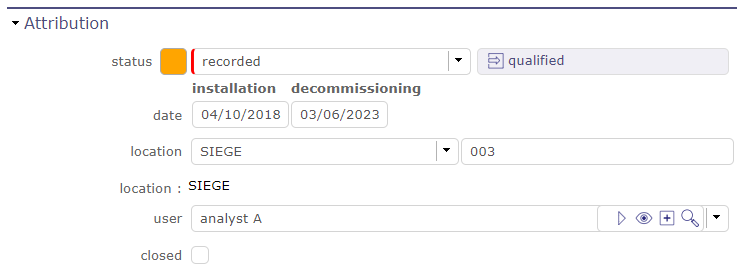
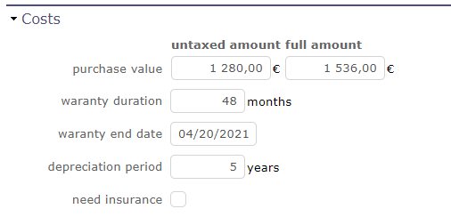
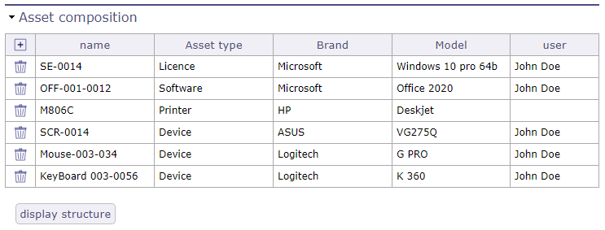
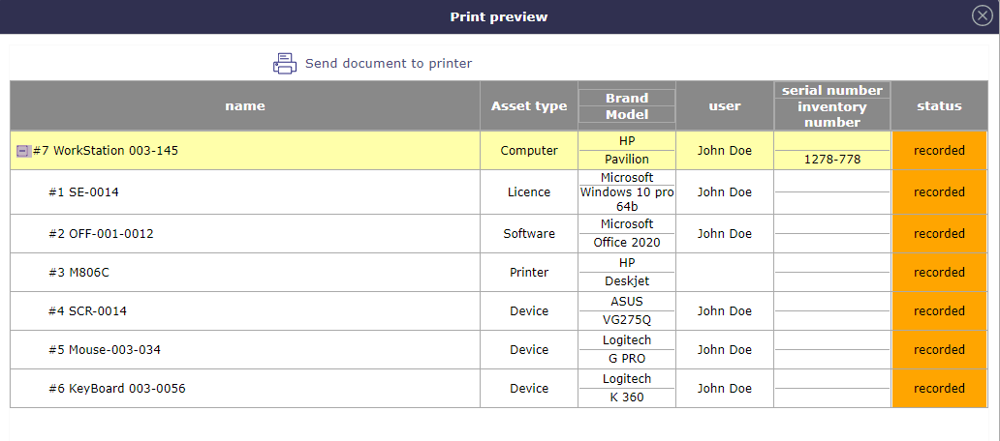
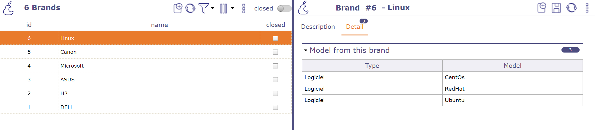
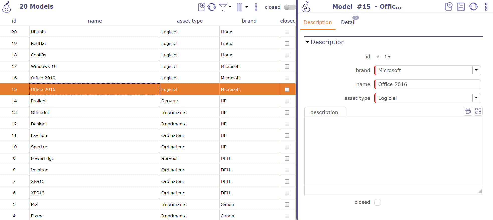
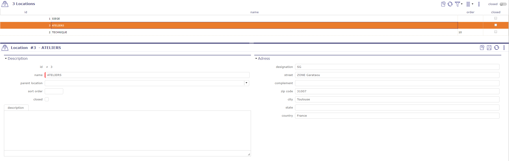

Gestion des actifs¶
Ce module est dédié à la gestion de votre infrastructure informatique.
Vous pouvez gérer :
Tous les types d’actifs
Catégories d’actifs
Marques
Modèles
Localisations des actifs
Actif¶
Cet écran vous permet de gérer des listes de licences, de versions, de produits ou même de composants liés aux équipements.
Définissez la liste des appareils contenus dans un autre appareil.
Affichez l’arborescence globale des équipements constituant un équipement, en pouvant fermer ou développer un niveau donné.
Lors de la copie d’un appareil, vous pouvez sélectionner la composition complète de cet appareil.
Chaque équipement contenu est dupliqué, récursivement, en initialisant les données uniques (numéro de série, références, etc.).

Écran de gestion des actifs¶
Droits d’accès
Vous pouvez limiter la visibilité des équipements.
certains champs seront mis à jour automatiquement pour permettre à l’utilisateur de voir les éléments qu’il vient de créer.
Si un profil a des droits de création et des droits de lecture uniquement sur « les éléments dont il est responsable », la création doit automatiquement positionner le gestionnaire sur l’utilisateur actuel.
Si un profil a des droits de création et des droits de lecture uniquement sur « ses propres éléments », la création doit automatiquement positionner l’utilisateur sur l’utilisateur actuel.
Cette gestion des droits est automatiquement étendue à tous les éléments ne dépendant pas du projet.
Alimentation du champ responsable lors de la création d’un élément si l’utilisateur a des droits de visibilité tels que « les éléments dont il est responsable ».
Avertissement
Masquer les boutons « Verrouiller » et « envoyer un mail » lorsque le droit d’accès est en lecture seule
Note
Chaque actif lié à une ressource ou un utilisateur est affiché sur leur écran respectif.
Voir : Ressource et Utilisateur
Attribution

Section Attribution¶
Cette section permet de définir :
Un statut pour chaque appareil selon le workflow sélectionné.
Une date d’installation et une éventuelle date de mise hors service.
L’emplacement de l’équipement, avec la possibilité de définir une liste (voir : Types d’actifs) et/ou un champ de saisie manuelle pour plus de précision.
L’utilisateur qui bénéficiera de cet équipement.
La case à cocher clos. Qui permet de mettre l’équipement en mode archive.
Section Coûts
Cette section permet de définir les coûts pour l’actif sélectionné.
Vous pouvez définir un coût pour :
Valeur d’achat
La période de garantie
Date de fin de garantie
La période d’amortissement
Le besoin d’assurance

Section Coûts¶
Section composition de l’actif
Lorsque vous définissez un élément parent, les composants de l’élément apparaissent dans cette section vous donnant la structure complète d’un élément.

Composition de l’actif¶
Le bouton afficher la structure ouvre une fenêtre contextuelle qui résume la composition complète de votre équipement sous forme de tableau.
Vous pouvez imprimer cette boîte.

Section composition de l’actif¶
Types d’actifs¶
Les types d’actifs dans les équipements permettent de lister les différents matériaux d’un équipement.
Par exemple, un poste de travail contient un ordinateur, des périphériques tels qu’un écran, une souris, un clavier, ou même une webcam, des logiciels, des licences, une imprimante…
Mais vous pouvez également créer des listes encore plus détaillées avec des types de stockage d’informations, de traitement ou d’équipements réseau.
Vous pouvez définir une icône pour chaque type d’actif.
ProjeQtOr met à votre disposition quelques icônes.
Astuce
Vous pouvez créer et importer les vôtres dans l’application.
Enregistrez vos icônes dans le dossier www\projeqtor\view\icons et relancez l’application.
Catégorie d’actif¶
L’écran des catégories d’équipements vous permettra de faire un inventaire plus détaillé de certains équipements.
Vous pouvez déterminer par exemple si un équipement peut être personnel, pour un service ou collectif.
Mais vous pouvez également déterminer si un appareil fait partie d’une architecture matérielle, réseau ou poste de travail
Marques¶
L’écran des marques permet de créer une liste de marques constituant votre infrastructure informatique.

Marques enregistrées¶
Modèles¶
L’écran des modèles vous permet de créer une liste de modèles liés à une marque et à un type d’équipement.

Modèles enregistrés¶
Emplacement¶
L’écran des emplacements permet de créer une liste de lieux pour localiser vos équipements.

Écran des emplacements¶
Le champ « emplacement » dans l’écran des actifs offre la possibilité de sélectionner dans la liste enregistrée des emplacements et un champ de saisie manuelle permettant d’ajouter des détails avec des caractères alphanumériques.
Section Adresse
Vous pouvez compléter l’adresse exacte en renseignant de nombreux champs :
Rue
Complément
Code postal
Ville
État / Région
Pays